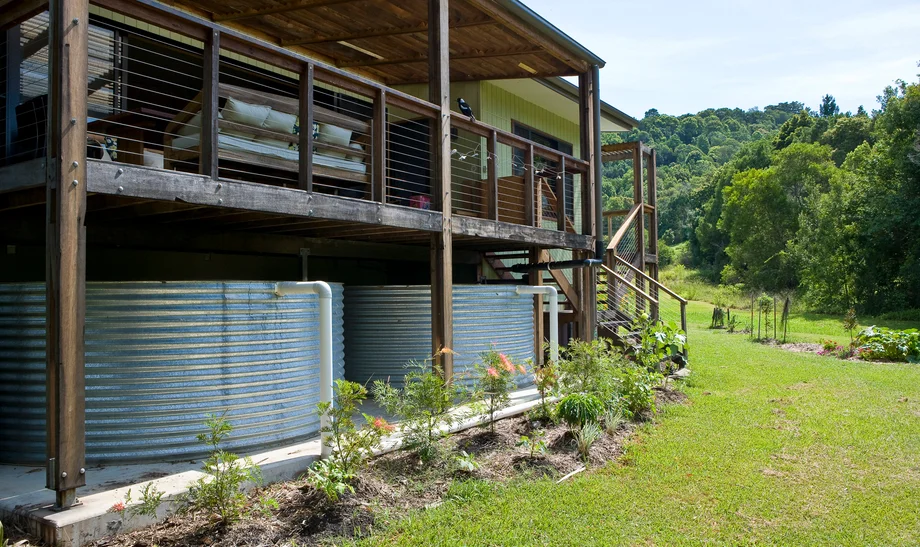
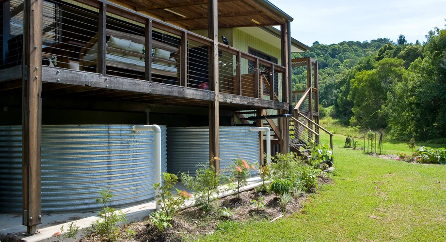
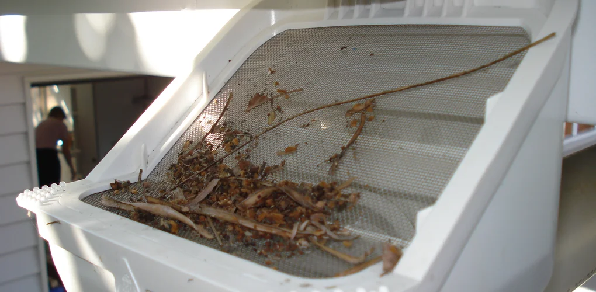
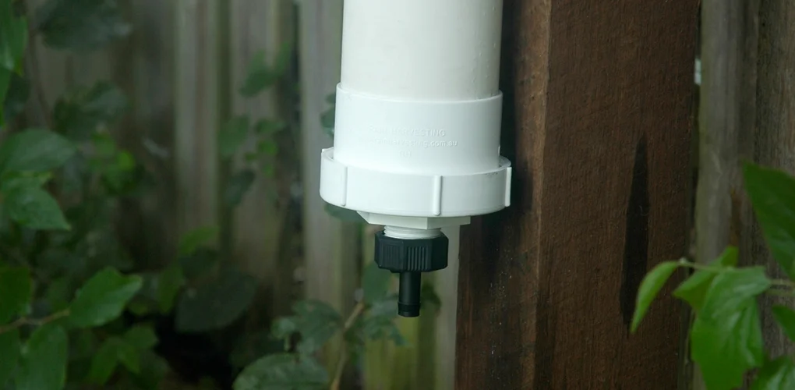
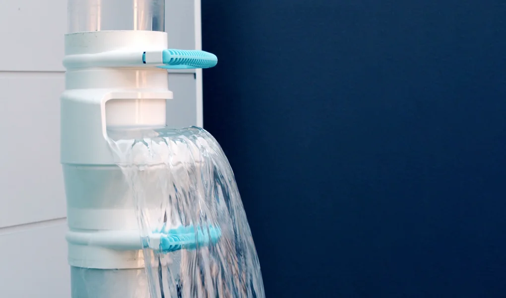
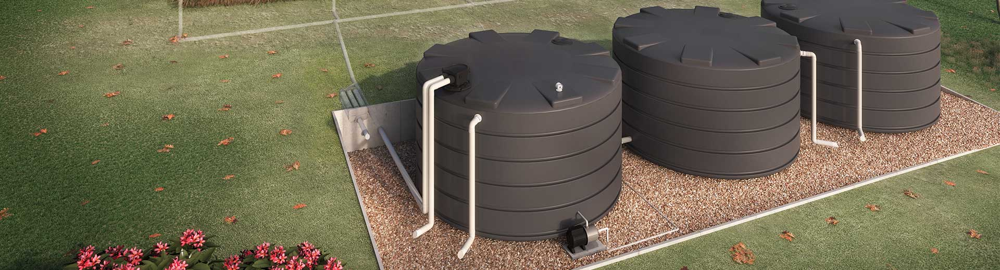
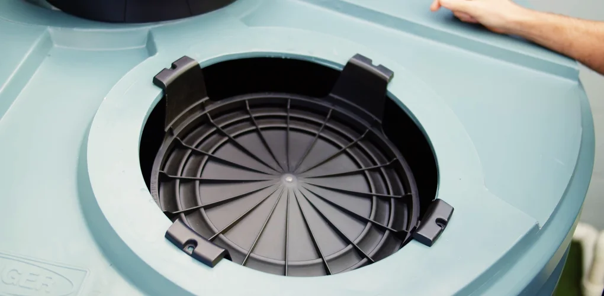
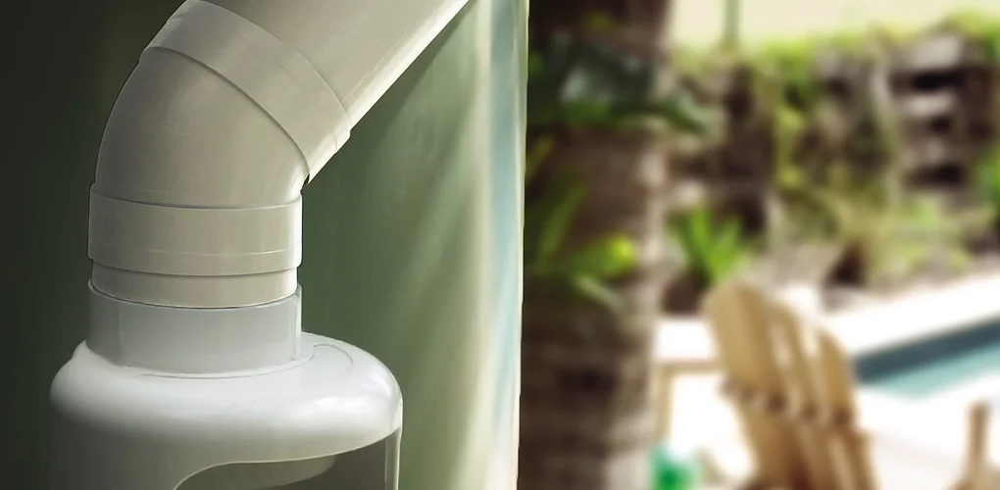
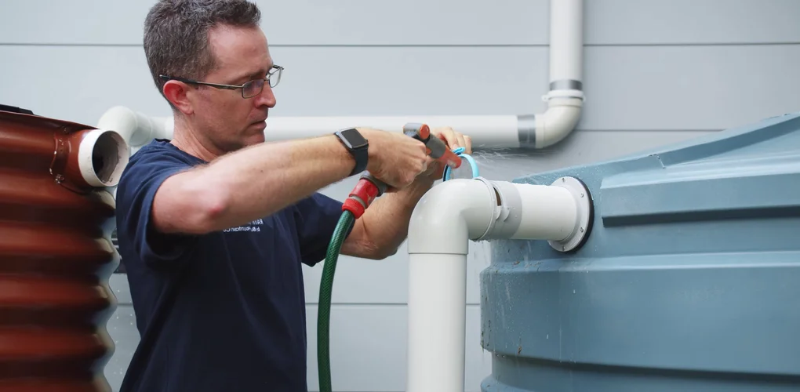

Follow these 12 essential steps to effectively harvest rainwater:
-
Step #01
Understand your rainwater needs
When it comes to Rain Harvesting, there are two operative words we use when determining more measurable goals – Quantity and Quality. How you plan to use your rainwater and how much you need for that use are the cornerstones in your decision-making when building an effective rainwater harvesting system. -
Step #02
Store your rainwater
Make the right choice for your property. Choose an appropriate storage vessel for your needs This is the simplest and most affordable way to harvest rainwater. You simply place barrels or water tanks below the downspouts of your gutter system. This tank can be connected to a pipe for drip irrigation. Dry System – A dry system uses a larger storage container for the water

-
Step #03
Assess your rainwater collection area
Audit your roof, gutters and surrounding environment to prepare your property for rainwater collection. the simple collection or storing of water through scientific techniques from the areas where the rain falls. It involves utilization of rain water for the domestic or the agricultural purpose

-
Step #04
Clean your rainwater: Filter leaves and debris
Keep leaves and debris out of your rainwater system. Mechanical filtration (via a sediment filter or Rusco spin-down system) is also integral to the success of rainwater treatment A rainwater collection system can catch most large particulate matter,

-
Step #05
Clean your rainwater: Divert the First Flush of rainwater
Use first flush diversion to channel, capture, and isolate the most contaminated rainwater from your roof to divert it away from your tank.

-
Step #06
Secure your rainwater system
By securing the entry and exit points of your system, you can keep animals, insects, sunlight and dirty water out in order to reduce hidden activity and preserve your rainwater quality.

-
Step #07
Decide on a pump or gravity fed system
A shower pump must be connected to a system that is gravity fed. This is where the water is fed to the pump via a tank or cistern. These are often located in the attic of a.

-
Step #08
Manage standing water
By looking after the water sitting in your tank and pipework, you’re ensured great quality water Water wisely. Getting the right watering schedule. Sprinkler system maintenanc

-
Step #09
Final stage rainwater filtration
Pre-Filter. The Millennium pre-filter is a sediment/carbon block cartridge Membrane. Water travels from the pre-filter into the membrane Post-Filter. Any tastes or odors remaining in the water will be reduced by the Polishing Filter. -
Step #10
Optimise Your Overflow
he practice of rainwater harvesting (RWH) has been studied extensively in recent years, as it has the potential to alleviate some of the increasing stress on urban water distribution systems and drainage networks. Within the field, an approach of real-time control of rainwater storage is emerging as a method to improve the ability of RWH systems to reduce runoff and urban drainage flows. As applying real-time control on RWH tanks means releasing water that could be used for supply, applying controlled-release policies water

-
Step #11
Monitor your water level
Long-term, systematic measurements of water levels provide essential data needed to evaluate changes in the resource over time, to develop ground-water models and forecast trends, and to design, implement, and monitor the effectiveness of ground-water management and protection programs. -
Step #12
Care for your system
Check the guttering on the property is clean & clear. Clean the filter unit in the tank (or the pre-tank filter, whichever you have). Ensure the pump is operating correctly as it should be by testing it a number of times. Ensure the mains water top-up or backup system is working as it should be by testing it a number of times, moving the float-switch and simulating the absence of rainwater to make sure mains water is provided in its place.
